From the oven
- Fresh bread & loavesBaked daily
- Sourdough-style artisan loavesBaked daily
- Rolls & bunsBaked daily
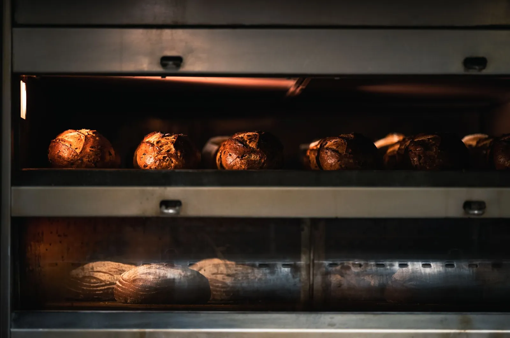
New Costessey, Norwich · Since 1998
A traditional craft bakery on Oval Road — fresh bread from the ovens each morning, sausage rolls and cheese straws that keep the queue moving, and cakes made for birthdays, weddings and wakes.
01 — The counter
Everything is baked on the premises and sold until it runs out — when the sausage rolls are gone, they’re gone. Come early for the best of the day.
Prices on request — ask at the counter or call 01603 749154.
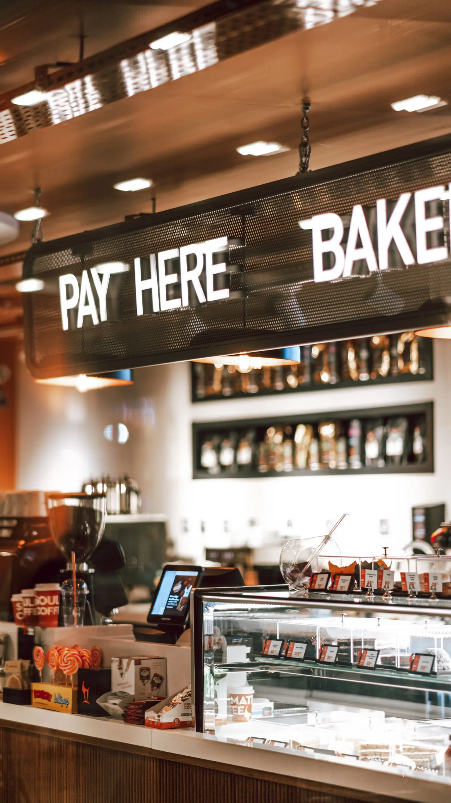
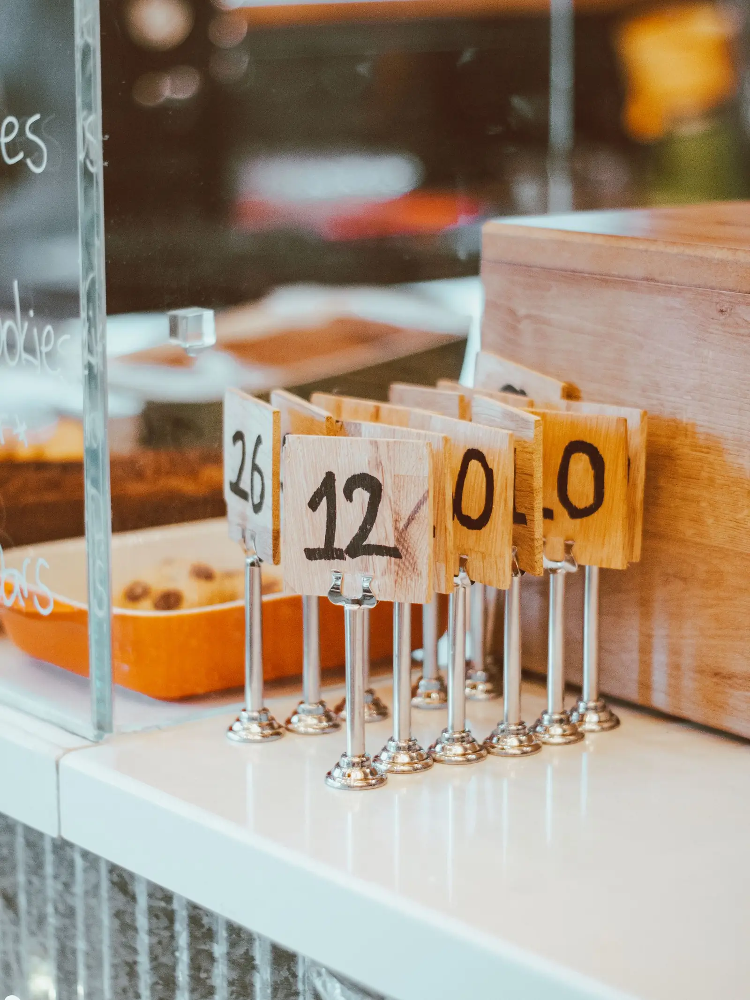
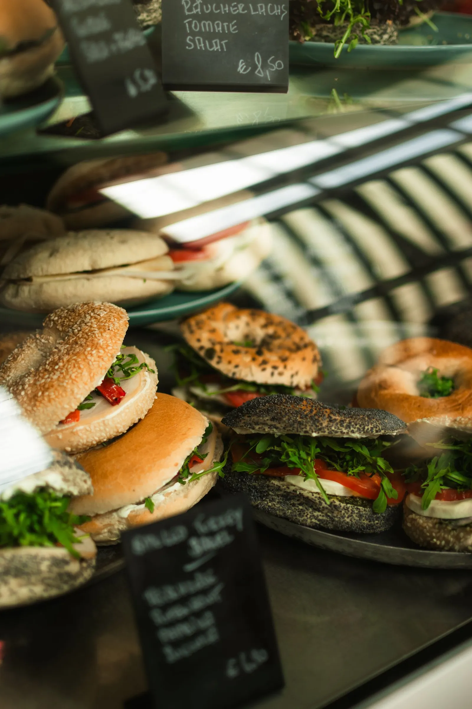
02 — Our story
Easters Bakery has been serving New Costessey and Norwich since 1998 — a traditional craft bakery where the bread is baked on the premises and the regulars have been coming for decades. Some customers have been coming since they were children; on a good morning there is a queue outside the door.
It is the kind of bakery people recommend by name: the best bakery in Norwich, locals say, with prices kept low and a counter that still does things the slow way — fresh bread, proper pastry, and a friendly word over the till.
The bakery is rated 4.9 by ThreeBestRated, scoring 118 out of 120 in their inspection — one of the highest marks of any bakery in the city.
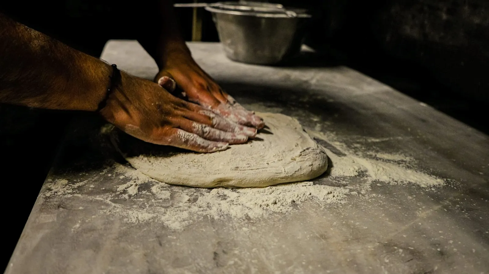
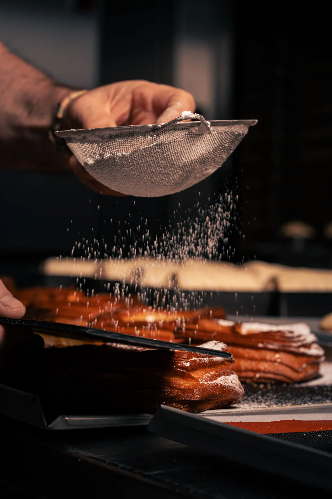
03 — Signature bakes
Four names come up again and again when locals talk about Easters. These are the ones to ask for first.
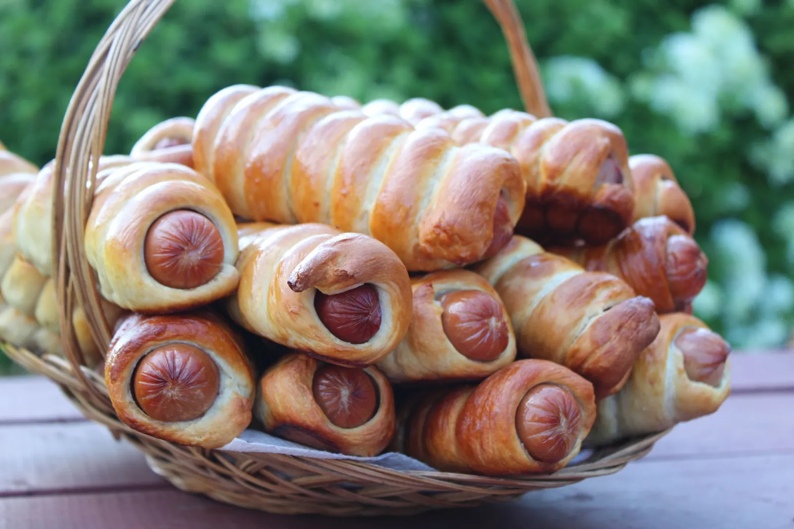
No. 01
The cult item. Golden pastry, proper filling — including a vegan version — and the first thing to sell out most mornings.
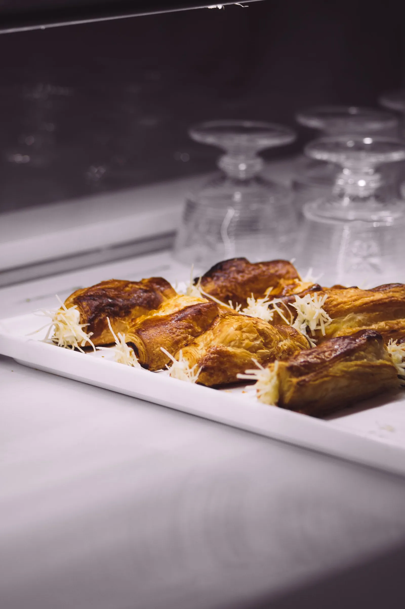
No. 02
Proper cheesey, flaky and — as more than one regular puts it — addictive. Take a bag; you will wish you had taken two.
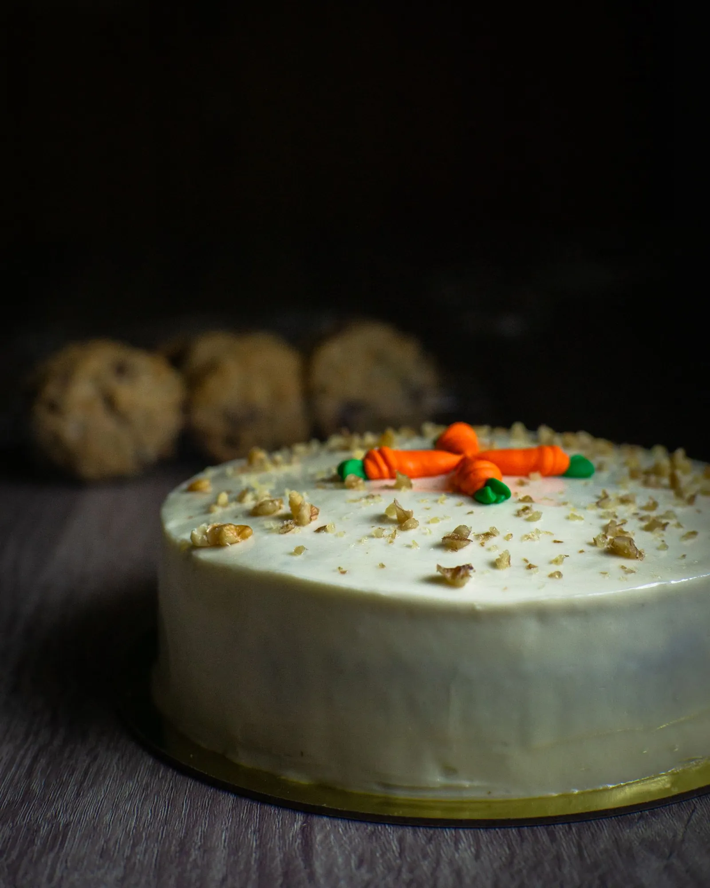
No. 03
Singled out by regulars as the best in town — moist, spiced and generously frosted, by the slice or as a whole cake.
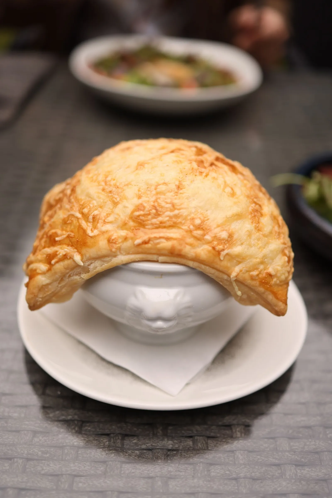
No. 04
Crisp pastry, hearty filling — a proper lunch from the counter, baked through the day while they last.
04 — Gallery
A look at the kind of baking that comes out of the ovens each day. Select any photo to view it larger.
Photographs are illustrative of the bakery’s range.
05 — Why locals choose
Not our words — the themes that come up, again and again, in what Norwich customers say about this bakery.
Come and see for yourselfThe cult items of the counter — called to die for and properly cheesey by the regulars who buy them by the bag.
Carrot cake and Bakewell slices singled out as the best in town, alongside celebration cakes made to order.
Customers who have been coming since they were children, queues outside the door, and a reputation as the best bakery in Norwich.
Fast service with a smile — and catering praised for looking after people properly, from memorials to vegan relatives.
Prices kept low and affordable, even as costs rise — quality that regulars say is worth every penny.
06 — Catering & deli
From a family do to a farewell, the bakery caters — and the deli counter covers the everyday as well.
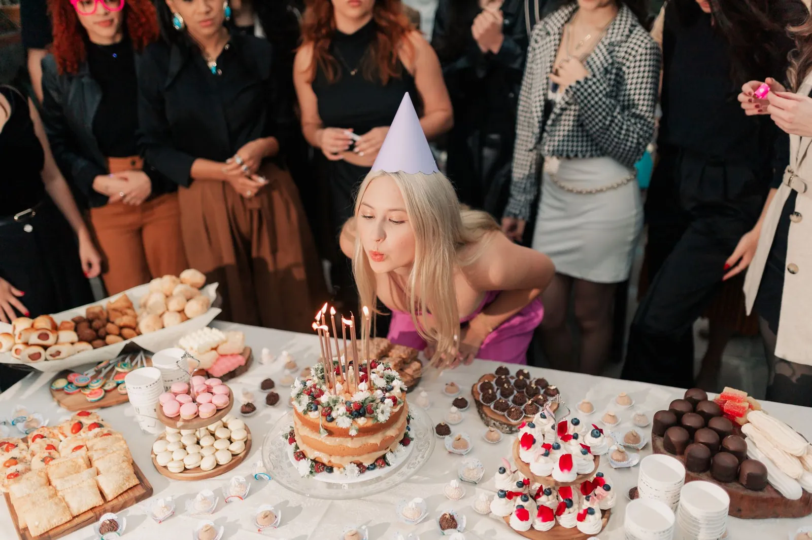
Catering for events and memorials, with staff who help make it easy — including loading the car. Vegan relatives catered for too. Talk to the bakery about what you need and when.
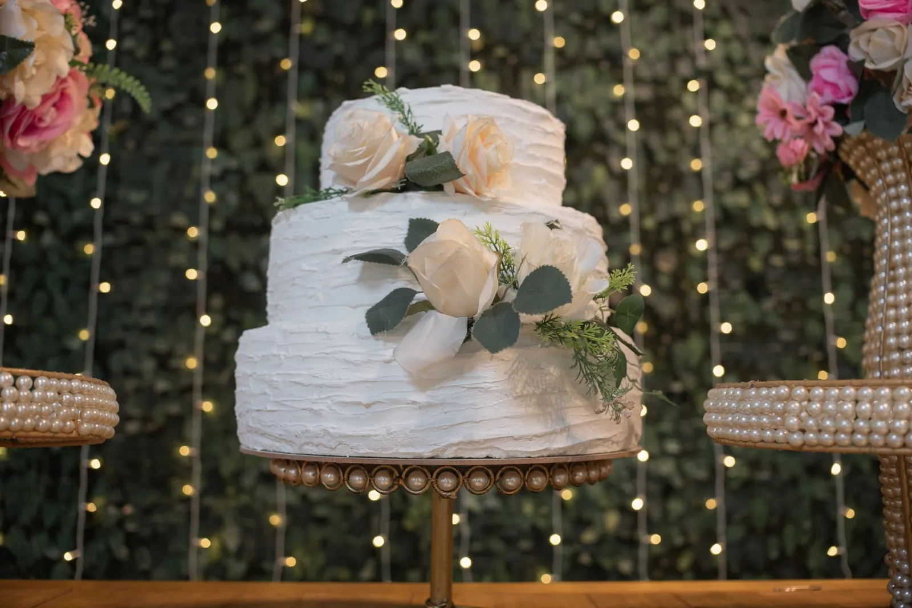
Decorative and celebration cakes made to order — birthdays, weddings and milestones. Order ahead so the bakers can plan your cake in.
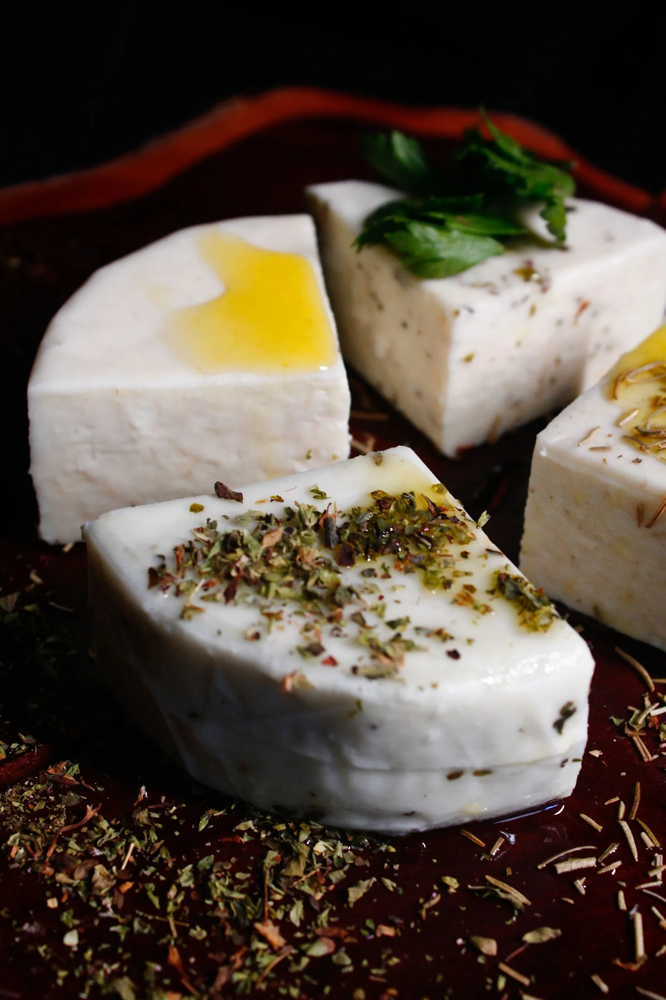
The deli counter serves cooked meats, cheeses and eggs, and fresh sandwiches made daily. Regular bread supply for businesses can be arranged — the bakery customises its offering for wholesale and corporate customers.
To arrange catering or a celebration cake, call 01603 749154 or email hello@eastersbakery.com.
07 — Visit
In New Costessey, Norwich — open six days a week, from 7 in the morning. Check opening hours below
2D Oval Road, New Costessey,
Norwich NR5 0DE
| Monday – Thursday | 7am – 4pm |
|---|---|
| Friday & Saturday | 7am – 3pm |
| Sunday | Closed |
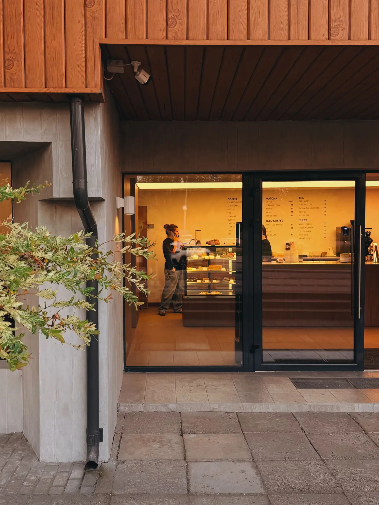
08 — Questions
Yes — the sausage rolls come in a vegan version, and there are vegan options among the fresh sandwiches too. Ask at the counter about what is available that day.
Yes — celebration and decorative cakes are made to order. Call 01603 749154 or email hello@eastersbakery.com ahead of time so the bakers can plan your cake in.
Yes — the bakery caters for events and memorials, and regulars praise how well the staff look after people, including catering for vegan guests and helping load the car. Get in touch to talk through numbers and dates.
Yes — wholesale and corporate supply is available, and the bakery customises its offering for regular bread supply. Contact the bakery to discuss what you need.
Monday to Thursday 7am to 4pm, Friday and Saturday 7am to 3pm, and closed on Sundays. The counter sells until the day’s baking runs out, so mornings are the safest bet for the full range.